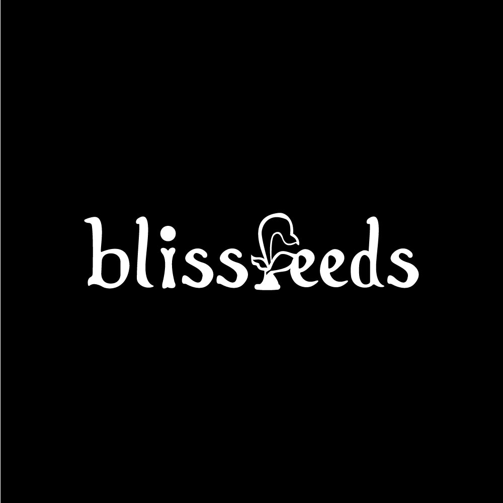
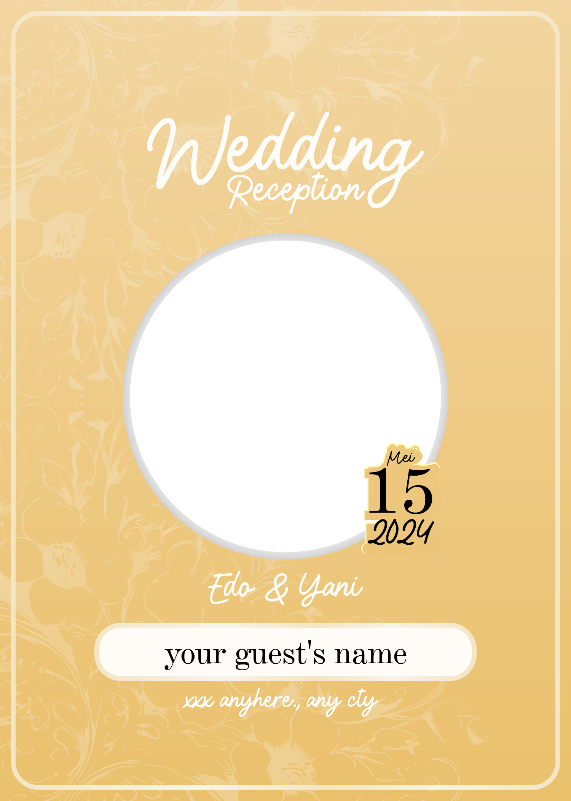
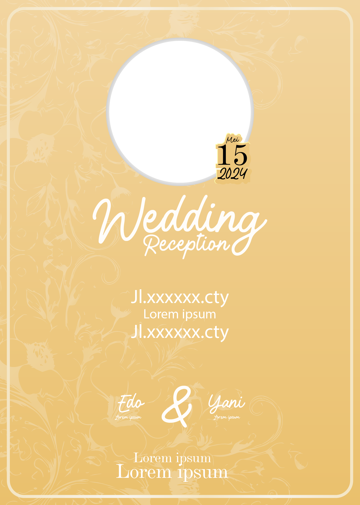
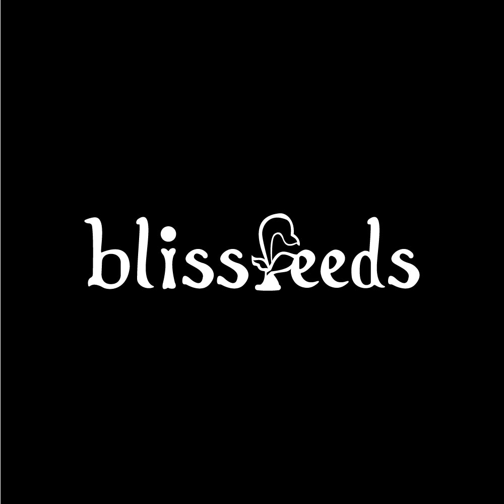
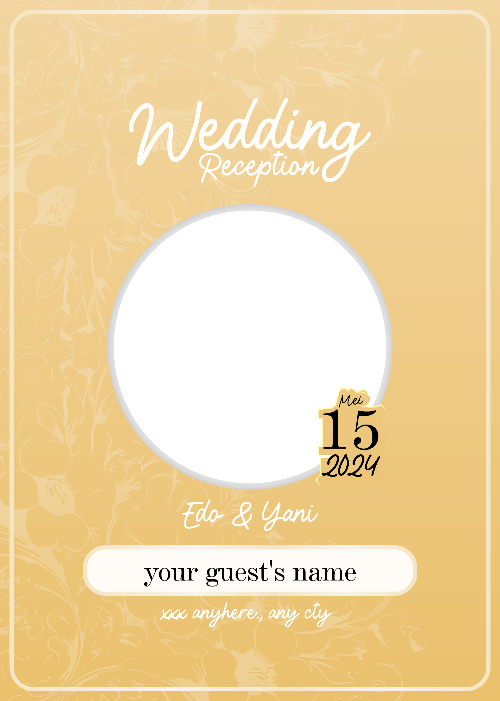
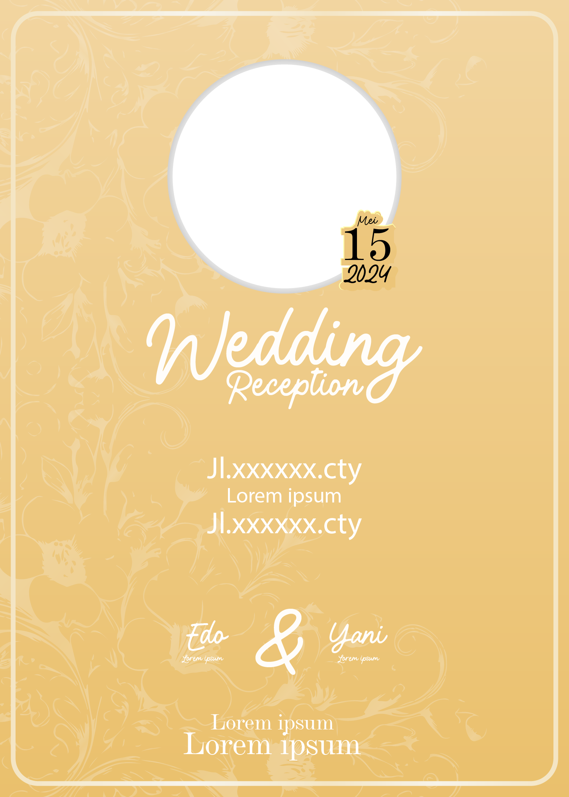
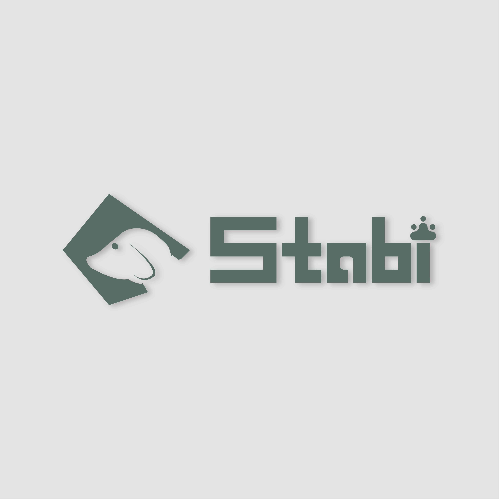
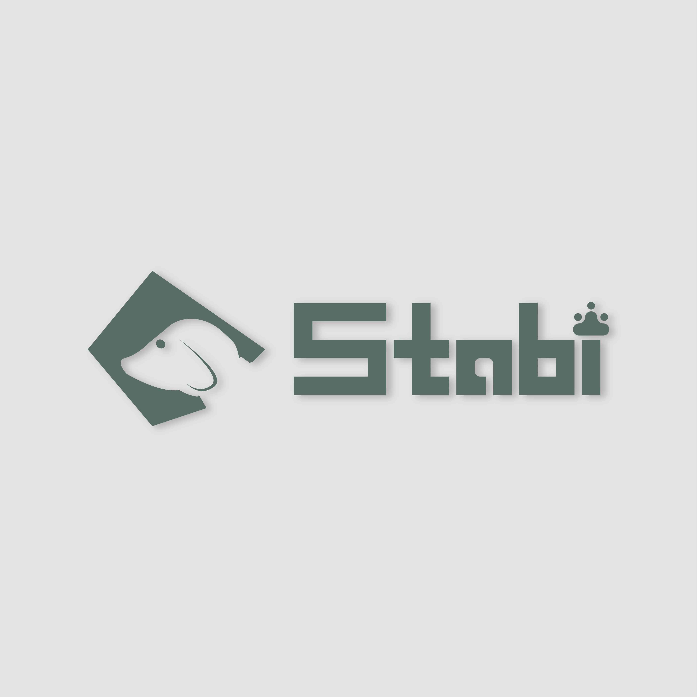

Services

Logo Design

Poster Design

Banner Design
Professional design for your business
Logo Design
Poster Design
Banner Design

I am a graphic designer who has been involved in the design world since 2022, with a strong background in printing. My experience began in the local printing environment, where I was directly involved in the production process of various visual needs such as posters, banners, and cutting stickers. From this experience, I built a deep understanding of the importance of design that is not only visually appealing, but also functional and effective in conveying messages. For more than the first year, I was accustomed to working with various print design requests that demanded speed, accuracy, and the ability to adapt to various characteristics of print media. I learned how to adjust visual elements to suit printing technical specifications, including CMYK color selection, high resolution, to production-friendly layouts. This gave me an advantage in understanding the limitations and potential of physical media in visual communication. Since 2023, I have begun to expand my scope of work into the freelance world, with a greater focus on branding and brand visual identity. I began to explore professional logo creation, color exploration, typography, and the preparation of cohesive and strategic visual identity guidelines (brand guidelines).
Beberapa hasil karya desain yang pernah saya kerjakan untuk berbagai klien.

 






 



"Desainnya bener-bener keren dan sesuai banget sama visi brand saya. Nggak nyangka hasil akhirnya bisa sebagus ini!"
Rani****
"Saya suka banget cara dia menangkap brief saya. Eksekusinya cepat, komunikatif, dan hasil desainnya profesional!"!
@Fajar***
"Profesional banget! Dari awal brief sampai revisi, semuanya berjalan lancar. Recommended!"!
Dita***
"Makasih banget ya, desain undangan nikahnya elegan dan beda dari yang lain. Banyak tamu yang muji juga!"!
In*** & Ri**
Before ordering, try to chat with me first.